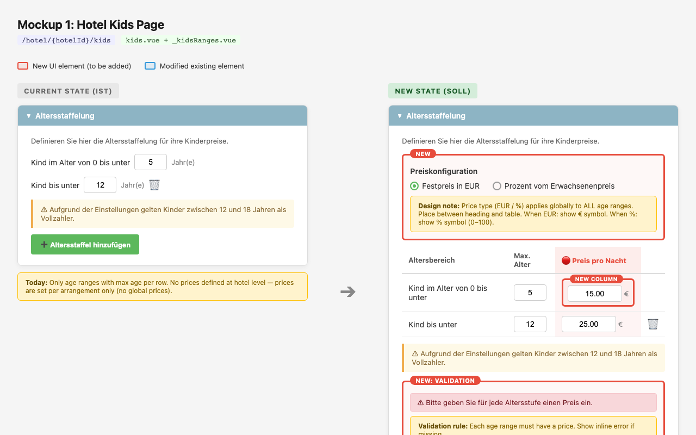

Four HTML mockups built fast to test a design direction and get stakeholder feedback — the output of a deep investigation into how hotels actually manage children's pricing and where the current setup was breaking down.
In our hotel extranet, children's prices lived at the offer level. A hotel with many arrangements had to enter the same age-tier prices over and over — once per offer, every time. In practice this meant a lot of inconsistent or missing kids pricing across a hotel's offers, and a lot of hoteliers asking why they were being asked to repeat themselves.
On top of that, the pricing model used the concept of an "Anteil" — a proportional share of the full-payer price — which confused non-expert hoteliers who just wanted to say "kids pay €15 a night" or "30% off the adult rate." The terminology was technically correct but practically opaque.
Before touching any design, I ran data analysis and expert interviews to understand the problem at depth. The data work involved cross-system analysis across two platforms with incompatible children's pricing models — different age-range representations, distinctions between 1st/2nd/3rd child that the new system didn't support, price variations by adult count that also didn't map cleanly. Getting that picture right was essential before deciding where any solution should sit in the data model.
The interviews surfaced what the data couldn't tell me: that most hotels configure the same prices across all their offers, that the "Anteil" terminology was a consistent sticking point, and that the real frustration was repetition — not complexity. Hotels weren't struggling to understand how children's pricing worked; they were struggling to understand why they had to re-enter it twenty times.
That pointed clearly at a hotel-level default: one place to set your children's prices, automatically applied everywhere, with the ability to override where a specific offer genuinely differs. Simple in principle, with a lot of detail in the edges — empty states, inheritance signalling, what happens when a hotel overrides a price but not the price type.
Once the direction was clear, the goal was to get something in front of stakeholders quickly — not a polished spec, but enough to test whether the concept was feasible and make the direction legible to people who hadn't been in the investigation.
I built four HTML mockups covering the full surface area the feature would touch. HTML was the right format here: faster to produce than slides, interactive enough to show states and transitions, and immediately understandable to both product and engineering without needing explanation.

Mockup 1: the hotel kids page — current state vs. proposed new state with hotel-level price configuration
The mockups did their job: they made the concept legible quickly, generated useful feedback from stakeholders, and confirmed the direction was worth pursuing. Once alignment was in place, I handed the work to our product designer to take it into proper design and build.
The estimated outcome for hotels with many arrangements: ~70% less repetitive data entry, fewer inconsistent or missing prices, and a UI that non-technical hoteliers can actually navigate — replacing a terminology-heavy model with something closer to how they think about pricing.